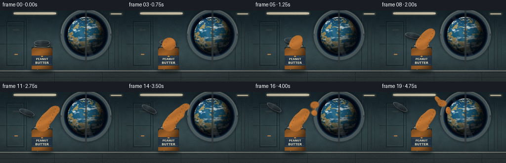
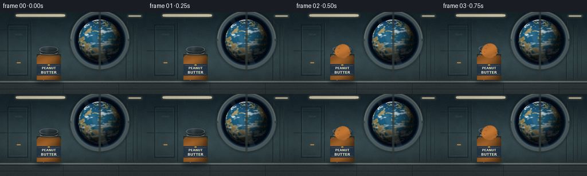
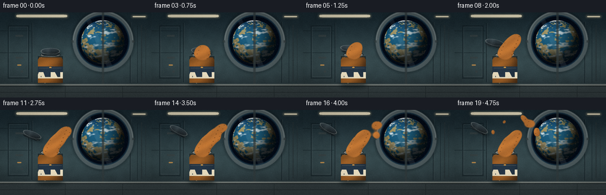
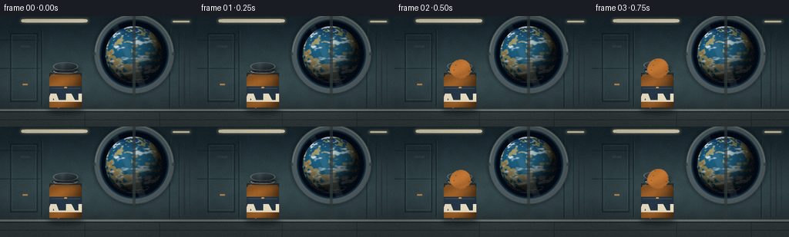

CODING AGENTS AS PIXEL WORLD MODELS
traex/DeepSeek-V4.1-Flash · mechanics_0001
点击播放 · 原生 RGB 像素
逐轮保存的候选
回放视频、检查图与代码变化。
每份候选均可单独播放。实际图片检查记录在下方工具轨迹中。
候选 01播放与检查图
点击播放 · 原生 RGB 像素


展开代码变化
--- 上一保存版本
+++ 本次保存版本
@@ -0,0 +1,827 @@
+"""Procedural 5-second space-station peanut-butter sequence.
+
+Everything is drawn from the prompt with local NumPy, SciPy, and Pillow.
+The renderer uses a 4x supersampled canvas and a metaball field for the
+viscous, slowly separating peanut butter.
+"""
+
+from pathlib import Path
+
+import numpy as np
+from PIL import Image, ImageDraw, ImageFont
+from scipy.ndimage import distance_transform_edt, gaussian_filter
+
+import artifact_io
+
+
+ROOT = Path(__file__).resolve().parent
+W, H = 256, 144
+N, FPS = 20, 4.0
+SS = 4
+CW, CH = W * SS, H * SS
+
+
+def smoothstep(edge0, edge1, value):
+ x = np.clip((value - edge0) / (edge1 - edge0), 0.0, 1.0)
+ return x * x * (3.0 - 2.0 * x)
+
+
+def rgb(value):
+ value = value.lstrip("#")
+ return np.array([int(value[i : i + 2], 16) for i in (0, 2, 4)], dtype=np.float32)
+
+
+def normalize01(array):
+ lo, hi = np.percentile(array, (1.0, 99.0))
+ return np.clip((array - lo) / max(hi - lo, 1e-6), 0.0, 1.0)
+
+
+def blend(dst, color, mask, opacity=1.0):
+ alpha = np.clip(mask * opacity, 0.0, 1.0)[..., None]
+ src = np.asarray(color, dtype=np.float32)
+ if src.ndim == 1:
+ dst[:] = dst * (1.0 - alpha) + src[None, None, :] * alpha
+ else:
+ dst[:] = dst * (1.0 - alpha) + src * alpha
+
+
+def draw_mask(function, box=None):
+ image = Image.new("L", (CW, CH), 0)
+ draw = ImageDraw.Draw(image)
+ function(draw)
+ mask = np.asarray(image, dtype=np.float32) / 255.0
+ if box is not None:
+ x0, y0, x1, y1 = box
+ clipped = np.zeros_like(mask)
+ clipped[y0:y1, x0:x1] = mask[y0:y1, x0:x1]
+ return clipped
+ return mask
+
+
+def make_earth_texture():
+ """Small equirectangular Earth texture built from layered smooth noise."""
+ rng = np.random.default_rng(9071)
+ tw, th = 512, 256
+ base = rng.normal(size=(th, tw))
+ n1 = gaussian_filter(base, sigma=(13, 18), mode=("wrap", "wrap"))
+ n2 = gaussian_filter(rng.normal(size=(th, tw)), sigma=(6, 9), mode=("wrap", "wrap"))
+ n3 = gaussian_filter(rng.normal(size=(th, tw)), sigma=(2.2, 3.2), mode=("wrap", "wrap"))
+ land_noise = normalize01(0.62 * n1 + 0.28 * n2 + 0.10 * n3)
+ land_noise = gaussian_filter(land_noise, sigma=(1.1, 1.6), mode=("wrap", "wrap"))
+
+ lat = np.linspace(-np.pi / 2, np.pi / 2, th)[:, None]
+ lon = np.linspace(-np.pi, np.pi, tw, endpoint=False)[None, :]
+ continental = (
+ land_noise
+ + 0.07 * np.sin(3.2 * lon + 2.1 * np.sin(lat * 1.7))
+ + 0.04 * np.cos(5.0 * lon - lat * 2.2)
+ )
+ land = smoothstep(0.57, 0.66, continental)
+
+ ocean_deep = rgb("#102b4d")
+ ocean_shallow = rgb("#176f91")
+ ocean_mix = np.clip(
+ 0.42
+ + 0.28 * np.cos(lat * 1.8)
+ + 0.18 * (land_noise - 0.5)
+ + 0.08 * np.sin(lon * 2.0 + lat),
+ 0.0,
+ 1.0,
+ )
+ texture = ocean_deep[None, None, :] * (1.0 - ocean_mix[..., None])
+ texture += ocean_shallow[None, None, :] * ocean_mix[..., None]
+
+ vegetation = rgb("#567545")
+ highland = rgb("#a38a58")
+ dryland = rgb("#bd9358")
+ land_color = (
+ vegetation[None, None, :] * (1.0 - land_noise[..., None])
+ + highland[None, None, :] * land_noise[..., None]
+ )
+ dry_band = smoothstep(0.38, 0.72, np.cos(lat * 3.0) * 0.5 + 0.5)
+ land_color = land_color * (1.0 - 0.32 * dry_band[..., None])
+ land_color += dryland[None, None, :] * (0.32 * dry_band[..., None])
+ texture = texture * (1.0 - land[..., None] * 0.96)
+ texture += land_color * (land[..., None] * 0.96)
+
+ ice = smoothstep(1.18, 1.39, np.abs(lat))
+ texture = texture * (1.0 - ice[..., None]) + rgb("#dce7e9")[None, None, :] * ice[..., None]
+
+ cloud_base = gaussian_filter(
+ rng.normal(size=(th, tw)), sigma=(4.0, 13.0), mode=("wrap", "wrap")
+ )
+ cloud_fine = gaussian_filter(
+ rng.normal(size=(th, tw)), sigma=(1.5, 4.5), mode=("wrap", "wrap")
+ )
+ cloud_noise = normalize01(0.75 * cloud_base + 0.25 * cloud_fine)
+ bands = 0.5 + 0.5 * np.sin(lat * 12.0 + 1.8 * np.sin(lon * 2.0))
+ clouds = smoothstep(0.57, 0.79, cloud_noise * (0.78 + 0.28 * bands))
+ clouds = gaussian_filter(clouds, sigma=(1.0, 1.5), mode=("wrap", "wrap"))
+ return texture.astype(np.float32), clouds.astype(np.float32)
+
+
+EARTH_TEXTURE, EARTH_CLOUDS = make_earth_texture()
+
+
+def render_background():
+ yy, xx = np.mgrid[0:CH, 0:CW].astype(np.float32)
+ v = yy / (CH - 1)
+ top = rgb("#17262d")
+ mid = rgb("#33464a")
+ low = rgb("#222d31")
+ image = np.empty((CH, CW, 3), dtype=np.float32)
+ image[:] = top
+ upper = smoothstep(0.0, 0.58, v)[..., None]
+ image = image * (1.0 - upper) + mid[None, None, :] * upper
+ lower = smoothstep(0.58, 1.0, v)[..., None]
+ image = image * (1.0 - lower) + low[None, None, :] * lower
+
+ rng = np.random.default_rng(218)
+ wall_noise = gaussian_filter(rng.normal(size=(CH // 8, CW // 8)), sigma=2.0)
+ wall_noise = np.asarray(
+ Image.fromarray(normalize01(wall_noise).astype(np.float32)).resize(
+ (CW, CH), Image.Resampling.BICUBIC
+ ),
+ dtype=np.float32,
+ )
+ image *= (0.94 + 0.10 * wall_noise[..., None])
+
+ # Recessed wall panels and narrow structural ribs.
+ shadow = draw_mask(
+ lambda d: [
+ d.rectangle((13 * SS, 22 * SS, 49 * SS, 112 * SS), outline=255, width=2 * SS),
+ d.line((54 * SS, 18 * SS, 54 * SS, 118 * SS), fill=255, width=2 * SS),
+ d.line((220 * SS, 16 * SS, 220 * SS, 119 * SS), fill=255, width=2 * SS),
+ d.line((232 * SS, 22 * SS, 232 * SS, 119 * SS), fill=255, width=1 * SS),
+ d.line((0, 31 * SS, 52 * SS, 31 * SS), fill=255, width=1 * SS),
+ d.line((0, 68 * SS, 52 * SS, 68 * SS), fill=255, width=1 * SS),
+ ]
+ )
+ blend(image, rgb("#0c171c"), shadow, 0.48)
+ rib_light = draw_mask(
+ lambda d: [
+ d.line((55 * SS, 18 * SS, 55 * SS, 118 * SS), fill=255, width=1 * SS),
+ d.line((221 * SS, 16 * SS, 221 * SS, 119 * SS), fill=255, width=1 * SS),
+ d.rectangle((15 * SS, 24 * SS, 47 * SS, 109 * SS), outline=255, width=1 * SS),
+ ]
+ )
+ blend(image, rgb("#758287"), rib_light, 0.17)
+
+ # Restrained overhead lighting.
+ ceiling_glow = draw_mask(
+ lambda d: [
+ d.rounded_rectangle(
+ (26 * SS, 3 * SS, 115 * SS, 9 * SS),
+ radius=3 * SS,
+ fill=255,
+ ),
+ d.rounded_rectangle(
+ (222 * SS, 5 * SS, 248 * SS, 9 * SS),
+ radius=2 * SS,
+ fill=255,
+ ),
+ ]
+ )
+ ceiling_glow = gaussian_filter(ceiling_glow, sigma=1.5 * SS)
+ blend(image, rgb("#f2ddaa"), ceiling_glow, 0.35)
+ blend(image, rgb("#fff2cf"), ceiling_glow > 0.72, 0.80)
+
+ # Left storage module handles and a small status panel.
+ handles = draw_mask(
+ lambda d: [
+ d.rounded_rectangle(
+ (26 * SS, 38 * SS, 39 * SS, 41 * SS), radius=1 * SS, fill=255
+ ),
+ d.rounded_rectangle(
+ (26 * SS, 75 * SS, 39 * SS, 78 * SS), radius=1 * SS, fill=255
+ ),
+ d.ellipse((35 * SS, 98 * SS, 39 * SS, 102 * SS), fill=255),
+ ]
+ )
+ blend(image, rgb("#0c1417"), handles, 0.62)
+ blend(image, rgb("#aeb9b4"), handles, 0.18)
+ status = draw_mask(
+ lambda d: [
+ d.rounded_rectangle(
+ (29 * SS, 88 * SS, 36 * SS, 90 * SS), radius=1 * SS, fill=255
+ )
+ ]
+ )
+ blend(image, rgb("#d8994c"), status, 0.78)
+
+ # Right-side utility rails.
+ rails = draw_mask(
+ lambda d: [
+ d.line((239 * SS, 21 * SS, 239 * SS, 116 * SS), fill=255, width=2 * SS),
+ d.line((246 * SS, 27 * SS, 246 * SS, 114 * SS), fill=255, width=1 * SS),
+ ]
+ )
+ blend(image, rgb("#0b1519"), rails, 0.58)
+ blend(image, rgb("#8c999a"), rails, 0.13)
+ return image
+
+
+def render_window(image, t):
+ cx, cy = 174.0, 49.0
+ radius = 45.0
+ yy, xx = np.mgrid[0:CH, 0:CW].astype(np.float32)
+ x = (xx - cx * SS) / SS
+ y = (yy - cy * SS) / SS
+ rr = np.hypot(x, y)
+ outer = smoothstep(radius + 7.5, radius + 5.8, rr)
+ inner = smoothstep(radius + 0.5, radius - 0.8, rr)
+
+ # Metal collar with a soft shadow on the wall.
+ shadow = smoothstep(radius + 13.0, radius + 5.0, rr) * (rr > radius)
+ blend(image, rgb("#071014"), shadow, 0.38)
+ blend(image, rgb("#4b585b"), outer, 0.96)
+ collar_hi = (rr > radius + 4.2) & (rr < radius + 6.1) & (y < 0)
+ blend(image, rgb("#9aa4a2"), collar_hi.astype(np.float32), 0.30)
+ blend(image, rgb("#0a1115"), inner, 0.92)
+
+ # Space beyond the planet.
+ space = np.empty((CH, CW, 3), dtype=np.float32)
+ space[:] = rgb("#020812")
+ window_glow = np.clip(1.0 - rr / radius, 0.0, 1.0)[..., None]
+ space += rgb("#08233a")[None, None, :] * (0.26 * window_glow)
+ stars = np.zeros((CH, CW), dtype=np.float32)
+ rng = np.random.default_rng(44)
+ for _ in range(44):
+ a = rng.uniform(0.0, 2.0 * np.pi)
+ r = radius * np.sqrt(rng.uniform(0.12, 0.94))
+ sx = int(round((cx + r * np.cos(a)) * SS))
+ sy = int(round((cy + r * np.sin(a)) * SS))
+ if 0 <= sx < CW and 0 <= sy < CH:
+ stars[sy, sx] = rng.uniform(0.35, 0.95)
+ stars = gaussian_filter(stars, sigma=0.65)
+ space += rgb("#d8edf4")[None, None, :] * stars[..., None]
+ blend(image, space, inner, 1.0)
+
+ # Earth: a shaded sphere sampled from the procedural equirectangular map.
+ earth_cx, earth_cy, earth_r = 173.5, 50.0, 37.0
+ ex = (xx - earth_cx * SS) / (earth_r * SS)
+ ey = -(yy - earth_cy * SS) / (earth_r * SS)
+ radial2 = ex * ex + ey * ey
+ sphere = radial2 <= 1.0
+ nz = np.sqrt(np.clip(1.0 - radial2, 0.0, 1.0))
+ normal = np.stack([ex, ey, nz], axis=-1)
+ light = np.array([-0.48, 0.62, 0.62], dtype=np.float32)
+ light /= np.linalg.norm(light)
+ diffuse = np.clip(normal @ light, 0.0, 1.0)
+
+ lon = np.arctan2(ex, np.maximum(nz, 1e-4))
+ lat = np.arcsin(np.clip(ey, -1.0, 1.0))
+ th, tw = EARTH_TEXTURE.shape[:2]
+ lon_index = ((lon / (2.0 * np.pi) + 0.5) * tw + t * 7.0).astype(np.int32) % tw
+ lat_index = np.clip(((0.5 - lat / np.pi) * th).astype(np.int32), 0, th - 1)
+ surface = EARTH_TEXTURE[lat_index, lon_index]
+ cloud_alpha = EARTH_CLOUDS[lat_index, lon_index] * 0.86
+ surface = surface * (1.0 - cloud_alpha[..., None])
+ surface += rgb("#e9f1ef")[None, None, :] * cloud_alpha[..., None]
+
+ light_factor = 0.14 + 0.94 * diffuse
+ surface = surface * light_factor[..., None]
+ surface += rgb("#5fa5c6")[None, None, :] * (
+ np.clip(nz, 0.0, 1.0) ** 3.0 * 0.12
+ )[..., None]
+ earth_mask = sphere.astype(np.float32) * inner
+ blend(image, surface, earth_mask, 1.0)
+
+ atmosphere = np.clip(1.0 - np.abs(rr - radius + 0.2) / 3.0, 0.0, 1.0)
+ atmosphere *= (rr <= radius).astype(np.float32)
+ blend(image, rgb("#5aa8c9"), gaussian_filter(atmosphere, sigma=1.2), 0.28)
+
+ # Thin diagonal glass reflection and four fastening bolts.
+ reflection = draw_mask(
+ lambda d: [
+ d.polygon(
+ [
+ (143 * SS, 8 * SS),
+ (151 * SS, 8 * SS),
+ (191 * SS, 93 * SS),
+ (181 * SS, 93 * SS),
+ ],
+ fill=255,
+ )
+ ]
+ )
+ reflection *= (rr < radius - 1.0).astype(np.float32)
+ blend(image, rgb("#d5eef2"), gaussian_filter(reflection, sigma=2.0), 0.075)
+
+ bolts = np.zeros((CH, CW), dtype=np.float32)
+ for angle in (0.0, np.pi / 2.0, np.pi, 3.0 * np.pi / 2.0):
+ bx = int((cx + (radius + 6.4) * np.cos(angle)) * SS)
+ by = int((cy + (radius + 6.4) * np.sin(angle)) * SS)
+ yy0, yy1 = max(0, by - 2 * SS), min(CH, by + 2 * SS)
+ xx0, xx1 = max(0, bx - 2 * SS), min(CW, bx + 2 * SS)
+ bolts[yy0:yy1, xx0:xx1] = 1.0
+ bolts = gaussian_filter(bolts, sigma=0.8)
+ blend(image, rgb("#101a1d"), bolts, 0.72)
+ blend(image, rgb("#aeb6b2"), bolts > 0.7, 0.14)
+ return image
+
+
+def render_surface(image):
+ yy, xx = np.mgrid[0:CH, 0:CW].astype(np.float32)
+ y = yy / SS
+ top = (y >= 122.0)
+ face = np.zeros((CH, CW), dtype=np.float32)
+ face[top] = 1.0
+ color = np.empty((CH, CW, 3), dtype=np.float32)
+ v = np.clip((y - 122.0) / 22.0, 0.0, 1.0)
+ color[:] = rgb("#313b3d")
+ color = color * (1.0 - 0.22 * v[..., None]) + rgb("#1b2225") * (0.22 * v[..., None])
+ blend(image, color, face, 1.0)
+
+ lip = (y >= 121.0) & (y < 124.0)
+ blend(image, rgb("#a4aaa2"), lip.astype(np.float32), 0.42)
+ edge = (y >= 124.0) & (y < 125.2)
+ blend(image, rgb("#070d0f"), edge.astype(np.float32), 0.62)
+ highlight = (y >= 122.2) & (y < 123.1)
+ blend(image, rgb("#d8d2bc"), highlight.astype(np.float32), 0.18)
+
+ seam = draw_mask(
+ lambda d: [
+ d.line((0, 135 * SS, W * SS, 135 * SS), fill=255, width=1 * SS),
+ d.line((110 * SS, 125 * SS, 110 * SS, H * SS), fill=255, width=1 * SS),
+ d.line((207 * SS, 125 * SS, 207 * SS, H * SS), fill=255, width=1 * SS),
+ ]
+ )
+ blend(image, rgb("#0c1214"), seam, 0.36)
+ return image
+
+
+def jar_half_width(y):
+ y = np.asarray(y, dtype=np.float32)
+ width = np.zeros_like(y)
+ shoulder = (y >= 70.0) & (y < 80.0)
+ width[shoulder] = 15.0 + (y[shoulder] - 70.0) * 0.62
+ body = (y >= 80.0) & (y < 118.5)
+ width[body] = 21.2
+ rounded = (y >= 118.5) & (y < 124.0)
+ width[rounded] = 21.2 * np.sqrt(
+ np.clip(1.0 - ((y[rounded] - 118.5) / 5.5) ** 2, 0.0, 1.0)
+ )
+ return width
+
+
+def jar_mask_components():
+ yy, xx = np.mgrid[0:CH, 0:CW].astype(np.float32)
+ x = xx / SS
+ y = yy / SS
+ half = jar_half_width(y)
+ mask = (np.abs(x - 85.0) <= half) & (half > 0.0)
+ label = mask & (y >= 91.5) & (y <= 111.5)
+ content = mask & (y >= 76.0) & (y <= 119.0)
+ return yy, xx, x, y, mask.astype(np.float32), label.astype(np.float32), content.astype(np.float32)
+
+
+def render_jar(image, t):
+ yy, xx, x, y, jar, label, content = jar_mask_components()
+
+ # Floor shadow, kept soft and grounded.
+ shadow = draw_mask(
+ lambda d: [
+ d.ellipse(
+ (61 * SS, 119 * SS, 109 * SS, 128 * SS),
+ fill=255,
+ )
+ ]
+ )
+ shadow = gaussian_filter(shadow, sigma=3.2 * SS)
+ blend(image, rgb("#071012"), shadow, 0.56)
+
+ # Dark glass silhouette and amber glass edges.
+ silhouette = draw_mask(
+ lambda d: [
+ d.ellipse((68 * SS, 67 * SS, 102 * SS, 76 * SS), outline=255, width=2 * SS),
+ d.rectangle((64 * SS, 74 * SS, 106 * SS, 119 * SS), outline=255, width=2 * SS),
+ ]
+ )
+ blend(image, rgb("#111719"), silhouette, 0.64)
+
+ # Peanut-butter contents with cylindrical lighting.
+ u = np.clip((x - 85.0) / 21.2, -1.0, 1.0)
+ shade = 0.72 + 0.20 * np.cos((u + 0.32) * 1.20) - 0.12 * u
+ shade *= 0.95 - 0.17 * smoothstep(0.78, 1.02, (y - 70.0) / 54.0)
+ nut_base = rgb("#a76124")
+ nut_hi = rgb("#d58a39")
+ nut_color = nut_base[None, None, :] * shade[..., None]
+ nut_color += nut_hi[None, None, :] * (
+ np.clip(0.28 - 0.20 * np.abs(u + 0.22), 0.0, 1.0) * 0.28
+ )[..., None]
+ nut_color *= 0.88 + 0.10 * np.sin(y * 0.24 + u * 2.0)[..., None]
+ blend(image, nut_color, content, 0.96)
+
+ # Warm glass tint and vertical window reflection.
+ glass_tint = jar * 0.25
+ blend(image, rgb("#b16e33"), glass_tint, 0.25)
+ glass_line = draw_mask(
+ lambda d: [
+ d.arc(
+ (68 * SS, 76 * SS, 84 * SS, 120 * SS),
+ start=82,
+ end=98,
+ fill=255,
+ width=1 * SS,
+ )
+ ]
+ )
+ glass_line *= jar
+ blend(image, rgb("#f2d8ad"), gaussian_filter(glass_line, sigma=0.7), 0.34)
+ right_shade = jar * np.clip((x - 96.0) / 12.0, 0.0, 1.0)
+ blend(image, rgb("#251912"), right_shade, 0.30)
+
+ # Navy label band, clipped exactly to the jar.
+ label_color = np.empty((CH, CW, 3), dtype=np.float32)
+ label_shade = 0.82 + 0.18 * np.cos((u + 0.25) * 1.1)
+ label_color[:] = rgb("#203447")
+ label_color *= label_shade[..., None]
+ blend(image, label_color, label, 0.96)
+ border = draw_mask(
+ lambda d: [
+ d.rectangle(
+ (66 * SS, 94 * SS, 104 * SS, 94 * SS),
+ fill=255,
+ ),
+ d.rectangle(
+ (66 * SS, 109 * SS, 104 * SS, 109 * SS),
+ fill=255,
+ ),
+ ]
+ )
+ border *= label
+ blend(image, rgb("#d9c99f"), border, 0.60)
+
+ # The text is deliberately simple and physically clipped to the label.
+ text_layer = Image.new("L", (CW, CH), 0)
+ td = ImageDraw.Draw(text_layer)
+ font_path = "/usr/share/fonts/truetype/dejavu/DejaVuSans-Bold.ttf"
+ try:
+ font1 = ImageFont.truetype(font_path, 22)
+ font2 = ImageFont.truetype(font_path, 25)
+ except OSError:
+ font1 = ImageFont.load_default()
+ font2 = ImageFont.load_default()
+ for text, font, ypos in (("PEANUT", font1, 95.2), ("BUTTER", font2, 102.2)):
+ box = td.textbbox((0, 0), text, font=font)
+ tw = box[2] - box[0]
+ td.text(
+ (85 * SS - tw / 2.0, ypos * SS),
+ text,
+ font=font,
+ fill=255,
+ stroke_width=0,
+ )
+ text_mask = np.asarray(text_layer, dtype=np.float32) / 255.0
+ text_mask *= label
+ blend(image, rgb("#f4e7c7"), text_mask, 0.98)
+
+ # A tiny creamy-peanut icon above the lettering.
+ icon = draw_mask(
+ lambda d: [
+ d.ellipse((83 * SS, 92 * SS, 87 * SS, 94 * SS), fill=255),
+ ]
+ )
+ icon *= label
+ blend(image, rgb("#dd9c45"), icon, 0.92)
+
+ # Top rim and exposed dark mouth.
+ mouth = draw_mask(
+ lambda d: [
+ d.ellipse((69 * SS, 68.8 * SS, 101 * SS, 75.2 * SS), fill=255),
+ d.ellipse((73 * SS, 70.0 * SS, 97 * SS, 73.8 * SS), fill=255),
+ ]
+ )
+ blend(image, rgb("#6f7472"), mouth, 0.98)
+ mouth_dark = draw_mask(
+ lambda d: [
+ d.ellipse((73.3 * SS, 70.2 * SS, 96.7 * SS, 73.4 * SS), fill=255),
+ ]
+ )
+ blend(image, rgb("#2a170d"), mouth_dark, 0.95)
+ mouth_highlight = draw_mask(
+ lambda d: [
+ d.arc(
+ (70 * SS, 69.0 * SS, 100 * SS, 75.0 * SS),
+ start=185,
+ end=350,
+ fill=255,
+ width=1 * SS,
+ )
+ ]
+ )
+ blend(image, rgb("#e5e0cf"), gaussian_filter(mouth_highlight, sigma=0.55), 0.38)
+
+ # Thin amber shoulder reflection.
+ shoulder_hi = draw_mask(
+ lambda d: [
+ d.arc(
+ (68 * SS, 70 * SS, 102 * SS, 88 * SS),
+ start=198,
+ end=326,
+ fill=255,
+ width=1 * SS,
+ )
+ ]
+ )
+ shoulder_hi *= jar
+ blend(image, rgb("#ffe1af"), gaussian_filter(shoulder_hi, sigma=0.7), 0.18)
+ return image
+
+
+def render_lid(image, t):
+ # The lid starts seated on the jar, then tumbles slowly up and left.
+ if t <= 0.035:
+ progress = 0.0
+ else:
+ progress = smoothstep(0.04, 0.92, t)
+ cx = 85.0 - 45.0 * progress + 1.4 * np.sin(progress * 7.0)
+ cy = 67.6 - 36.0 * progress + 0.8 * np.sin(progress * 9.0)
+ angle = np.deg2rad(31.0 * progress)
+
+ yy, xx = np.mgrid[0:CH, 0:CW].astype(np.float32)
+ x = xx / SS - cx
+ y = yy / SS - cy
+ ca, sa = np.cos(angle), np.sin(angle)
+ lx = ca * x + sa * y
+ ly = -sa * x + ca * y
+
+ top_ellipse = (lx / 16.6) ** 2 + ((ly + 2.0) / 5.4) ** 2 <= 1.0
+ skirt = (
+ (np.abs(lx) <= 16.0)
+ & (ly >= 1.6)
+ & (ly <= 5.8)
+ & (np.abs(lx) <= 16.0 * np.sqrt(np.clip(1.0 - ((ly - 1.6) / 5.2) ** 2, 0.0, 1.0)))
+ )
+ lid = (top_ellipse | skirt).astype(np.float32)
+ shadow = gaussian_filter(np.roll(lid, (3 * SS, 4 * SS), axis=(0, 1)), sigma=2.0 * SS)
+ blend(image, rgb("#071012"), shadow, 0.32)
+
+ # Dark blue-gray plastic with a cool top light and warm station bounce.
+ top_shade = np.clip(0.64 + 0.22 * (-(ly + 2.0) / 6.0) - 0.15 * (lx / 17.0), 0.25, 1.0)
+ lid_color = rgb("#3c4b53")[None, None, :] * top_shade[..., None]
+ lid_color += rgb("#8d9b98")[None, None, :] * (
+ np.clip(0.25 - np.abs(lx + 4.0) / 22.0, 0.0, 1.0) * 0.30
+ )[..., None]
+ blend(image, lid_color, lid, 0.98)
+
+ underside = (skirt & (ly > 3.0)).astype(np.float32)
+ blend(image, rgb("#101a1f"), underside, 0.58)
+ ridges = (
+ skirt
+ & (np.sin((np.arctan2(ly - 3.2, lx) + angle) * 18.0) > 0.72)
+ ).astype(np.float32)
+ blend(image, rgb("#a6b1ad"), gaussian_filter(ridges, sigma=0.35), 0.18)
+ rim_line = (
+ ((lx / 16.7) ** 2 + ((ly + 2.0) / 5.5) ** 2 > 0.78)
+ & ((lx / 16.7) ** 2 + ((ly + 2.0) / 5.5) ** 2 <= 1.02)
+ & top_ellipse
+ )
+ blend(image, rgb("#c5cec7"), rim_line.astype(np.float32), 0.26)
+ return image
+
+
+def bezier(points, u):
+ u = np.asarray(u, dtype=np.float32)
+ om = 1.0 - u
+ x = (
+ om**3 * points[0][0]
+ + 3.0 * om**2 * u * points[1][0]
+ + 3.0 * om * u**2 * points[2][0]
+ + u**3 * points[3][0]
+ )
+ y = (
+ om**3 * points[0][1]
+ + 3.0 * om**2 * u * points[1][1]
+ + 3.0 * om * u**2 * points[2][1]
+ + u**3 * points[3][1]
+ )
+ return x, y
+
+
+def fluid_particles(t):
+ """Metaball particles for the extrusion and its detached dollops."""
+ phase = 0.65 * t
+ path = (
+ (85.0, 70.8),
+ (88.0, 56.0),
+ (101.5, 51.5),
+ (109.5, 35.2),
+ )
+ growth = smoothstep(0.10, 0.55, t)
+ if t < 0.56:
+ u_end = 0.06 + 0.86 * growth
+ else:
+ u_end = 0.80 + 0.035 * np.sin((t - 0.56) * 14.0)
+
+ particles = []
+ # A flattened mound at the mouth anchors the extrusion to the jar.
+ particles.append((85.0, 70.8, 6.7, 3.3, 0.0, 1.0))
+ sample_count = max(8, int(34 * max(growth, 0.12)))
+ for i, u in enumerate(np.linspace(0.0, u_end, sample_count)):
+ px, py = bezier(path, u)
+ px += 0.9 * np.sin(u * 11.0 + phase * 2.0) * u
+ py += 0.45 * np.sin(u * 15.0 - phase) * u
+ radius = 5.5 - 1.15 * u + 0.75 * np.sin(u * 13.0 + phase * 3.0)
+ weight = 0.82 + 0.10 * np.cos(u * 9.0 - phase)
+ particles.append((float(px), float(py), float(radius), float(radius * 0.92), 0.0, float(weight)))
+
+ # A thicker, lumpy tip develops before the first pinch-off.
+ tip_u = min(0.96, u_end + 0.07)
+ tx, ty = bezier(path, tip_u)
+ tip_radius = 5.3 + 1.4 * smoothstep(0.33, 0.58, t)
+ particles.append((float(tx), float(ty), float(tip_radius * 1.12), float(tip_radius), -0.35, 0.92))
+
+ # The first dollop pulls away, leaving a tapered viscous bridge.
+ if t > 0.48:
+ p = smoothstep(0.48, 0.96, t)
+ gx = 109.0 + 19.0 * p + 1.2 * np.sin(4.0 * t)
+ gy = 36.0 - 13.0 * p + 1.5 * np.sin(2.4 * t + 0.6)
+ angle = -0.55 + 0.55 * p
+ particles.append((gx, gy, 8.0 + 0.8 * p, 6.3 + 0.4 * p, angle, 1.0))
+ if t < 0.77:
+ bridge = smoothstep(0.48, 0.64, t) * (1.0 - smoothstep(0.67, 0.77, t))
+ if bridge > 0.02:
+ sx, sy = bezier(path, 0.86)
+ for q in np.linspace(0.24, 0.78, 4):
+ bx = sx * (1.0 - q) + gx * q
+ by = sy * (1.0 - q) + gy * q
+ br = (0.75 + 1.15 * np.sin(np.pi * q)) * bridge
+ particles.append((bx, by, br, br * 1.5, angle, 0.75))
+
+ # Two later droplets separate from the strand and drift independently.
+ if t > 0.64:
+ p = smoothstep(0.64, 1.0, t)
+ particles.append(
+ (
+ 103.5 + 36.0 * p,
+ 47.0 - 7.0 * p + 1.2 * np.sin(3.0 * t),
+ 5.5 - 0.8 * p,
+ 4.6 + 0.4 * p,
+ 0.75 - 0.7 * p,
+ 0.98,
+ )
+ )
+ if t > 0.77:
+ p = smoothstep(0.77, 1.0, t)
+ particles.append(
+ (
+ 99.0 + 17.0 * p,
+ 52.0 - 38.0 * p + 1.0 * np.cos(3.2 * t),
+ 4.3 - 0.7 * p,
+ 5.2 - 0.5 * p,
+ -0.25 - 0.5 * p,
+ 0.96,
+ )
+ )
+ if t > 0.88:
+ p = smoothstep(0.88, 1.0, t)
+ particles.append(
+ (
+ 116.0 + 23.0 * p,
+ 27.0 + 8.0 * p,
+ 2.6,
+ 3.1,
+ 0.4,
+ 0.90,
+ )
+ )
+ return particles
+
+
+def render_fluid(image, t):
+ if t < 0.10:
+ return image
+
+ x0, y0, x1, y1 = 24 * SS, 7 * SS, 171 * SS, 84 * SS
+ yy, xx = np.mgrid[y0:y1, x0:x1].astype(np.float32)
+ x = xx / SS
+ y = yy / SS
+ field = np.zeros(x.shape, dtype=np.float32)
+ for cx, cy, rx, ry, angle, weight in fluid_particles(t):
+ ca, sa = np.cos(angle), np.sin(angle)
+ dx = x - cx
+ dy = y - cy
+ u = ca * dx + sa * dy
+ v = -sa * dx + ca * dy
+ field += weight * np.exp(-0.5 * ((u / rx) ** 2 + (v / ry) ** 2))
+
+ threshold = 0.53
+ alpha = np.clip((field - threshold) / 0.17, 0.0, 1.0)
+ solid = field > threshold
+ if not solid.any():
+ return image
+
+ # A distance-to-edge height field creates a glossy, thick tube surface.
+ dist = distance_transform_edt(solid)
+ height = np.sqrt(np.clip(dist / (7.0 * SS), 0.0, 1.0))
+ height = gaussian_filter(height, sigma=0.8 * SS)
+ gy, gx = np.gradient(height)
+ scale = 1.65
+ nx = -gx * scale
+ ny = -gy * scale
+ nz = np.sqrt(1.0 + nx * nx + ny * ny)
+ nx /= nz
+ ny /= nz
+ nz = 1.0 / nz
+
+ light = np.array([-0.56, -0.68, 0.64], dtype=np.float32)
+ light /= np.linalg.norm(light)
+ view = np.array([0.0, 0.0, 1.0], dtype=np.float32)
+ half = light + view
+ half /= np.linalg.norm(half)
+ diffuse = np.clip(nx * light[0] + ny * light[1] + nz * light[2], 0.0, 1.0)
+ specular = np.clip(nx * half[0] + ny * half[1] + nz * half[2], 0.0, 1.0) ** 25.0
+
+ marble = 0.5 + 0.5 * np.sin(
+ x * 0.16 + y * 0.21 + 1.4 * np.sin(y * 0.08 + t * 1.7)
+ )
+ edge = smoothstep(0.0, 2.6 * SS, dist)
+ base = rgb("#8d4a18")[None, None, :] * (0.68 + 0.34 * diffuse[..., None])
+ base = base * (0.84 + 0.16 * edge[..., None])
+ base += rgb("#c77a2d")[None, None, :] * (
+ (0.10 + 0.15 * marble) * (0.35 + 0.65 * diffuse)
+ )[..., None]
+ base += rgb("#f5c06c")[None, None, :] * (specular[..., None] * 0.72)
+ base += rgb("#ffe0a3")[None, None, :] * (
+ (np.clip(nz, 0.0, 1.0) ** 12.0 * 0.10)[..., None]
+ )
+
+ # Fine darker specks and marbling make the material read as peanut butter.
+ speck = (
+ np.sin(x * 0.91 + y * 0.37)
+ + np.sin(x * 0.43 - y * 0.83 + 1.1)
+ + np.cos(x * 0.27 + y * 1.13)
+ )
+ speck_mask = (speck > 2.28) & solid
+ base[speck_mask] *= 0.76
+
+ target = image[y0:y1, x0:x1]
+ a = alpha[..., None]
+ image[y0:y1, x0:x1] = target * (1.0 - a) + base * a
+
+ # Soft contact shadow under the base, before the fluid itself.
+ return image
+
+
+def render_dust(image, t):
+ rng = np.random.default_rng(620)
+ base_positions = np.column_stack(
+ [rng.uniform(56.0, 210.0, 18), rng.uniform(18.0, 118.0, 18)]
+ )
+ layer = np.zeros((CH, CW), dtype=np.float32)
+ for i, (x, y) in enumerate(base_positions):
+ px = x + 2.5 * np.sin(t * 2.2 + i)
+ py = y - 1.2 * t + 0.8 * np.cos(t * 2.7 + i * 1.7)
+ ix = int(round(px * SS))
+ iy = int(round(py * SS))
+ if 0 <= ix < CW and 0 <= iy < CH:
+ layer[iy, ix] = 0.45 + 0.45 * np.sin(i * 2.3 + t * 4.0) ** 2
+ layer = gaussian_filter(layer, sigma=0.75)
+ blend(image, rgb("#d5e4df"), layer, 0.22)
+ return image
+
+
+def finish_frame(image, index):
+ yy, xx = np.mgrid[0:CH, 0:CW].astype(np.float32)
+ nx = (xx / CW - 0.5) * 2.0
+ ny = (yy / CH - 0.5) * 2.0
+ vignette = np.clip(1.0 - 0.15 * (nx * nx + ny * ny), 0.82, 1.0)
+ image *= vignette[..., None]
+
+ # Gentle highlight rolloff and a stable, extremely fine sensor grain.
+ image = np.maximum(image, 0.0)
+ image = 255.0 * (image / 255.0) ** 0.96
+ rng = np.random.default_rng(1000 + index)
+ grain = rng.normal(scale=1.35, size=(H, W, 1))
+ small = Image.fromarray(np.clip(image, 0, 255).astype(np.uint8)).resize(
+ (W, H), Image.Resampling.LANCZOS
+ )
+ array = np.asarray(small, dtype=np.float32) + grain
+ array = np.clip(array, 0, 255).astype(np.uint8)
+ return array
+
+
+def render_frame(index):
+ t = index / (N - 1)
+ image = render_background()
+ image = render_window(image, t)
+ image = render_surface(image)
+ image = render_jar(image, t)
+ image = render_lid(image, t)
+ image = render_fluid(image, t)
+ image = render_dust(image, t)
+ return finish_frame(image, index)
+
+
+def main():
+ frames = np.stack([render_frame(index) for index in range(N)], axis=0)
+ assert frames.shape == (N, H, W, 3), frames.shape
+ assert frames.dtype == np.uint8
+ artifact_io.save(frames, ROOT)
+ print(f"saved {N} frames to {ROOT}")
+
+
+if __name__ == "__main__":
+ main()
候选 02播放与检查图
点击播放 · 原生 RGB 像素


展开代码变化
--- 上一保存版本
+++ 本次保存版本
@@ -458,12 +458,12 @@
td = ImageDraw.Draw(text_layer)
font_path = "/usr/share/fonts/truetype/dejavu/DejaVuSans-Bold.ttf"
try:
- font1 = ImageFont.truetype(font_path, 22)
- font2 = ImageFont.truetype(font_path, 25)
+ font1 = ImageFont.truetype(font_path, 34 * SS)
+ font2 = ImageFont.truetype(font_path, 39 * SS)
except OSError:
font1 = ImageFont.load_default()
font2 = ImageFont.load_default()
- for text, font, ypos in (("PEANUT", font1, 95.2), ("BUTTER", font2, 102.2)):
+ for text, font, ypos in (("PEANUT", font1, 94.1), ("BUTTER", font2, 101.8)):
box = td.textbbox((0, 0), text, font=font)
tw = box[2] - box[0]
td.text(
@@ -687,6 +687,30 @@
0.90,
)
)
+ if t > 0.80:
+ p = smoothstep(0.80, 1.0, t)
+ particles.append(
+ (
+ 100.0 - 35.0 * p,
+ 45.0 - 8.0 * p + 1.0 * np.sin(2.6 * t),
+ 3.6 - 0.5 * p,
+ 4.4 - 0.4 * p,
+ -0.55 + 0.45 * p,
+ 0.93,
+ )
+ )
+ if t > 0.86:
+ p = smoothstep(0.86, 1.0, t)
+ particles.append(
+ (
+ 106.0 - 22.0 * p,
+ 30.0 - 9.0 * p + 0.8 * np.cos(3.4 * t),
+ 2.7,
+ 3.3,
+ 0.25 + 0.4 * p,
+ 0.88,
+ )
+ )
return particles
可观测工具轨迹
实际执行的命令与返回图片。
命令 1exit 0
/bin/bash -c "pwd && rg --files -g 'GENERATION_RULES.md' -g 'prompt.txt' -g 'task_spec.json' -g '"'!node_modules'"' -g '"'!vendor'"'"
命令 2exit 0
/bin/bash -c 'ls -la'
命令 3exit 0
/bin/bash -c "find . -maxdepth 2 -type f | sort | sed -n '1,200p'"
命令 4exit 0
/bin/bash -c 'cat GENERATION_RULES.md'
命令 5exit 0
/bin/bash -c 'cat prompt.txt'
命令 6exit 0
/bin/bash -c 'cat task_spec.json'
命令 7exit 0
/bin/bash -c "sed -n '1,240p' artifact_io.py"
命令 8exit 0
/bin/bash -c "sed -n '1,240p' player_template.html"
命令 9exit 0
/bin/bash -c "python - <<'PY'
import sys
from PIL import Image
import numpy as np
print(sys.version)
print('PIL', Image.__version__)
print('numpy', np.__version__)
try:
import scipy
print('scipy', scipy.__version__)
except Exception as e:
print('no scipy', e)
PY"命令 10exit 0
/bin/bash -c 'command -v chafa || command -v viu || command -v img2txt || command -v jp2 || command -v ffmpeg || true'
命令 11exit 0
/bin/bash -c "python - <<'PY'
try:
import cv2
print('cv2', cv2.__version__)
except Exception as e: print('no cv2', e)
try:
import matplotlib
print('matplotlib', matplotlib.__version__)
except Exception as e: print('no matplotlib', e)
PY"命令 12exit 0
/bin/bash -c "fc-match 'DejaVu Sans' -f '%{file}\\n' | head -1"命令 13exit 1
/bin/bash -c 'MPLCONFIGDIR=.tmp/mpl python generate.py'
命令 14exit 1
/bin/bash -c 'MPLCONFIGDIR=.tmp/mpl python generate.py'
命令 15exit 0
/bin/bash -c 'MPLCONFIGDIR=.tmp/mpl python generate.py'
命令 16exit 0
/bin/bash -c "python - <<'PY'
from PIL import Image
import numpy as np
im=Image.open('inspection.png').convert('RGB')
w,h=im.size
im.thumbnail((100,60))
a=np.asarray(im)
# ANSI truecolor blocks, upper/lower pixels per character
for y in range(0,a.shape[0],2):
row=[]
for x in range(a.shape[1]):
r,g,b=a[y,x]
row.append(f'\\x1b[48;2;{r};{g};{b}m ')
print(''.join(row)+'\\x1b[0m')
PY"命令 17exit 0
/bin/bash -c 'command -v montage || command -v magick || command -v convert || true'
命令 18exit 0
/bin/bash -c "python - <<'PY'
from PIL import Image, ImageDraw
from pathlib import Path
import numpy as np
files=sorted(Path('frames').glob('*.png'))
# 5 columns, labels, no dark surrounding strip so terminal preview focuses on pixels.
tw,th=256,144
out=Image.new('RGB',(tw*5,th*4),(10,13,17))
for i,f in enumerate(files):
out.paste(Image.open(f).convert('RGB'),((i%5)*tw,(i//5)*th))
out.save('.tmp/all_frames.png')
im=out.copy(); im.thumbnail((120,72),Image.Resampling.LANCZOS)
a=np.asarray(im)
for y in range(0,a.shape[0],2):
print(''.join(f'\\x1b[48;2;{a[y,x,0]};{a[y,x,1]};{a[y,x,2]}m ' for x in range(a.shape[1]))+'\\x1b[0m')
PY"命令 19exit 0
/bin/bash -c "python - <<'PY'
from PIL import Image
import numpy as np
chars=' .,:;irsXA253hMHGS#9B&@'
for fn in ['frames/00.png','frames/10.png','frames/19.png']:
im=Image.open(fn).convert('RGB').resize((128,72),Image.Resampling.LANCZOS)
a=np.asarray(im,dtype=float)
lum=(0.2126*a[:,:,0]+0.7152*a[:,:,1]+0.0722*a[:,:,2])/255
print('\\n###',fn)
for row in lum:
print(''.join(chars[min(len(chars)-1,int(v*(len(chars)-1)))] for v in row))
PY"命令 20exit 0
/bin/bash -c "python - <<'PY'
from PIL import Image
import numpy as np
frames=np.stack([np.asarray(Image.open(f'frames/{i:02d}.png').convert('RGB')) for i in range(20)])
d=np.abs(frames[1:].astype(int)-frames[:-1].astype(int)).mean((1,2,3))
print('mean consecutive RGB delta:', np.round(d,2).tolist())
for i in [0,1,4,8,12,16,19]:
a=frames[i]
orange=(a[:,:,0]>a[:,:,1]*1.35)&(a[:,:,0]>a[:,:,2]*1.8)&(a[:,:,0]>60)
yy,xx=np.where(orange)
print(i,'orange pixels',len(xx),'bbox',(int(xx.min()),int(yy.min()),int(xx.max()),int(yy.max())) if len(xx) else None)
print('unique colors',len(np.unique(frames.reshape(-1,3),axis=0)))
PY"命令 21exit 0
/bin/bash -c "python - <<'PY'
from PIL import Image
import numpy as np
chars=' .,:;irsXA253hMHGS#9B&@'
for fn,crop in [('frames/00.png',(52,58,118,127)),('frames/08.png',(52,15,160,127)),('frames/19.png',(52,0,160,127))]:
im=Image.open(fn).convert('RGB').crop(crop)
w,h=im.size
im=im.resize((w*2,h*2),Image.Resampling.LANCZOS)
a=np.asarray(im,dtype=float)
# emphasize saturation for fluid/earth structure
lum=(0.2126*a[:,:,0]+0.7152*a[:,:,1]+0.0722*a[:,:,2])/255
print('\\n###',fn,crop)
for row in lum:
print(''.join(chars[min(len(chars)-1,int(v*(len(chars)-1)))] for v in row))
PY"命令 22exit 0
/bin/bash -c "python - <<'PY'
from PIL import Image
im=Image.open('inspection.png')
print(im.size)
# crop sheet down to its first four sampled frames (large preview)
im.crop((0,0,1024,165)).resize((128,21),Image.Resampling.LANCZOS).save('.tmp/preview.png')
PY"命令 23exit 0
/bin/bash -c "python - <<'PY'
from PIL import Image
import numpy as np
im=Image.open('.tmp/preview.png').convert('RGB')
a=np.asarray(im)
chars=' .,:;irsXA253hMHGS#9B&@'
for row in a:
lum=0.2126*row[:,0]+0.7152*row[:,1]+0.0722*row[:,2]
print(''.join(chars[min(len(chars)-1,int(v/255*(len(chars)-1)))] for v in lum))
PY"命令 24exit 0
/bin/bash -c "fc-match 'DejaVu Sans Condensed:style=Bold' -f '%{file}\\n' | head -1"命令 25exit 0
/bin/bash -c 'MPLCONFIGDIR=.tmp/mpl python generate.py'
命令 26exit 0
/bin/bash -c "python - <<'PY'
from pathlib import Path
from PIL import Image
import numpy as np, json, re
frames=sorted(Path('frames').glob('*.png'))
arr=np.stack([np.asarray(Image.open(p).convert('RGB')) for p in frames])
p=np.load('pixels.npz')['pixels']
html=Path('index.html').read_text()
print('png_count',len(frames))
print('frames_shape',arr.shape,'dtype',arr.dtype)
print('pixels_shape',p.shape,'pixels_dtype',p.dtype)
print('unique_frame_hashes',len({hash(x.tobytes()) for x in arr}))
print('mean_consecutive_delta',round(float(np.abs(arr[1:].astype(int)-arr[:-1].astype(int)).mean()),3))
print('color_range',int(arr.min()),int(arr.max()),'unique_colors',len(np.unique(arr.reshape(-1,3),axis=0)))
print('html_bytes',len(html),'pixel_ready', 'window.__pixelReady=true' in html, 'no_placeholder', '__DATA__' not in html and '__ID__' not in html)
print('artifacts',[(x.name,x.stat().st_size) for x in [Path('pixels.npz'),Path('inspection.png'),Path('transition_check.png'),Path('index.html')]])
print('spec',json.loads(Path('task_spec.json').read_text()))
PY"命令 27exit 0
/bin/bash -c "python -m py_compile generate.py && echo 'py_compile: ok'"
命令 28exit 0
/bin/bash -c 'command -v tesseract || true'
命令 29exit 0
/bin/bash -c 'git status --short 2>/dev/null || true'
命令 30exit 0
/bin/bash -c "python - <<'PY'
from PIL import Image
im=Image.open('frames/19.png').convert('RGB')
# Inspect label with terminal colors at a larger scale.
im=im.crop((62,64,108,124)).resize((92,120),Image.Resampling.NEAREST)
a=__import__('numpy').asarray(im)
for y in range(0,120,2):
print(''.join(f'\\x1b[48;2;{a[y,x,0]};{a[y,x,1]};{a[y,x,2]}m ' for x in range(92))+'\\x1b[0m')
PY"命令 31exit 0
/bin/bash -c "python - <<'PY'
from PIL import Image, ImageOps
im=Image.open('frames/19.png').convert('L').crop((64,92,106,115)).resize((168,92),Image.Resampling.NEAREST)
# print one character per 2x2 block for a readable binary label mask
im=im.resize((84,46),Image.Resampling.BOX)
a=__import__('numpy').asarray(im)
chars=' .:-=+*#%@'
for row in a:
print(''.join(chars[min(9,int(v/256*10))] for v in row))
PY"保存候选 2 份；完成命令 31 次；可验证图片返回 0 张。原始 API 响应与完整日志保留在本地。